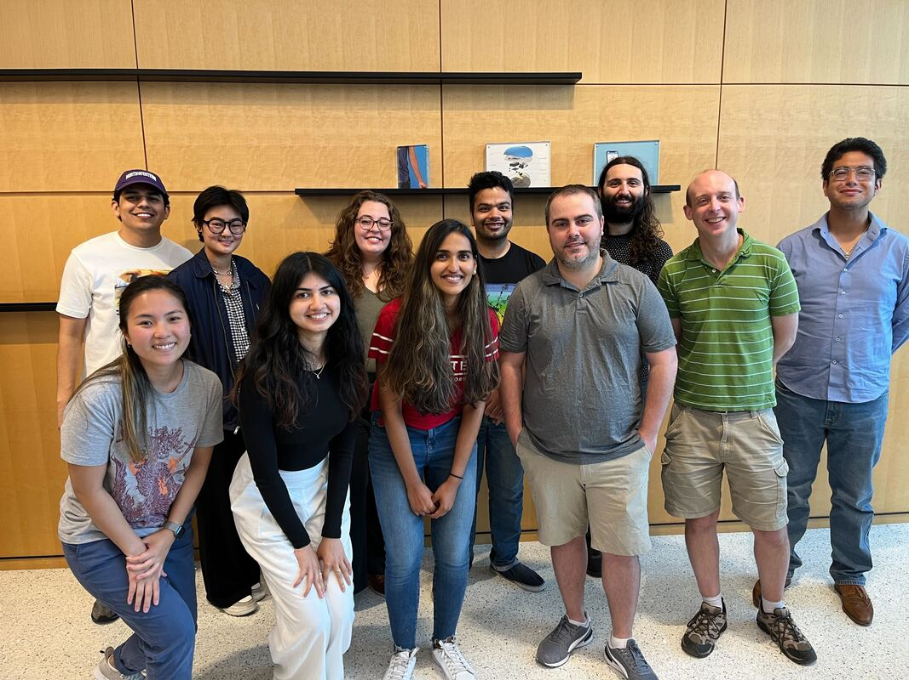
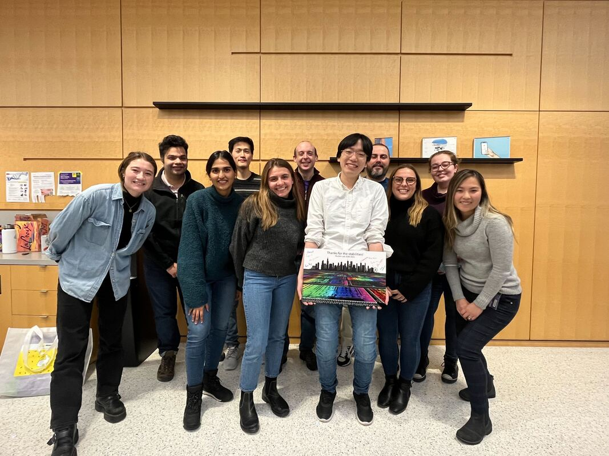

New lab members! Undergrads! Fellowships! A mega-scale paper!
7/24/2023
It has been a whirlwind in the Rocklin Lab since the last lab update! Here are some of the exciting developments.
Four new lab members!
Welcome to Andra and Mario, joining the lab from Northwestern's DGP program! This is the first year we have had two Ph.D. students join! 🏎️🏎️
Welcome to Vasili MD PhD, joining the lab from Northwestern's PSTP program! Vasili is the first PSTP fellow to join the lab and we are excited to have his mix of biophysical and medical background!
Welcome to Carlos Merlos, joining the lab through the Rosetta Commons Postbac program! We are back to having a postdoc after a break in 2022-2023. Carlos joins us after previously doing great work with Kevin Drew at UIC!
Four summer undergraduates!
Every summer seems to overflow with new people but this is the largest of all!
Welcome to Darcy Kim, joining through the Rosetta Commons REU program!
Welcome to Vani Lorish, joining through Northwestern's Synthetic Biology REU!
Welcome to Elle Jung and Pranav Doradla! Elle and Pranav are Northwestern undergraduates who obtained summer research funding to work with our lab. It is great to have you all with us!
Two new fellowships!
Huge congratulations to Cydney Martell for being awarded a PhRMA Predoctoral Fellowship!! This is the first outside fellowship to a student in the lab and really reflects a ton of hard work Cydney put into preparing her application!
And another huge congratulations to Claire Phoumyvong for being awarded an NIH F31 Predoctoral Fellowship!! This is the first NIH fellowship to any lab member and also resulted from a ton of very hard work!
One new Ph.D. Candidate!
Congratulations to Tanu Priya for passing her qualifying exam! Tanu is creating an entire new area of the lab in enzyme design!
Two summer internships!
Yulia started a summer internship at AI Proteins as a Rosetta Commons REU student!
Cydney started a summer internship at Microsoft Research!
One mega-scale paper!
Kotaro's paper Mega-scale experimental analysis of protein folding stability in biology and design was published in Nature! This paper was preprinted in December and got a hugely positive response. We also released all the data for this paper on Zenodo, and the dataset has already received >600 unique downloads. The dataset includes >775,000 high quality stability measurements! There was way more in this dataset than we could possibly have analyzed in one paper, so please explore it yourself and let us know what you find!
Four new lab members!
Welcome to Andra and Mario, joining the lab from Northwestern's DGP program! This is the first year we have had two Ph.D. students join! 🏎️🏎️
Welcome to Vasili MD PhD, joining the lab from Northwestern's PSTP program! Vasili is the first PSTP fellow to join the lab and we are excited to have his mix of biophysical and medical background!
Welcome to Carlos Merlos, joining the lab through the Rosetta Commons Postbac program! We are back to having a postdoc after a break in 2022-2023. Carlos joins us after previously doing great work with Kevin Drew at UIC!
Four summer undergraduates!
Every summer seems to overflow with new people but this is the largest of all!
Welcome to Darcy Kim, joining through the Rosetta Commons REU program!
Welcome to Vani Lorish, joining through Northwestern's Synthetic Biology REU!
Welcome to Elle Jung and Pranav Doradla! Elle and Pranav are Northwestern undergraduates who obtained summer research funding to work with our lab. It is great to have you all with us!
Two new fellowships!
Huge congratulations to Cydney Martell for being awarded a PhRMA Predoctoral Fellowship!! This is the first outside fellowship to a student in the lab and really reflects a ton of hard work Cydney put into preparing her application!
And another huge congratulations to Claire Phoumyvong for being awarded an NIH F31 Predoctoral Fellowship!! This is the first NIH fellowship to any lab member and also resulted from a ton of very hard work!
One new Ph.D. Candidate!
Congratulations to Tanu Priya for passing her qualifying exam! Tanu is creating an entire new area of the lab in enzyme design!
Two summer internships!
Yulia started a summer internship at AI Proteins as a Rosetta Commons REU student!
Cydney started a summer internship at Microsoft Research!
One mega-scale paper!
Kotaro's paper Mega-scale experimental analysis of protein folding stability in biology and design was published in Nature! This paper was preprinted in December and got a hugely positive response. We also released all the data for this paper on Zenodo, and the dataset has already received >600 unique downloads. The dataset includes >775,000 high quality stability measurements! There was way more in this dataset than we could possibly have analyzed in one paper, so please explore it yourself and let us know what you find!

We also have two bittersweet departures from the lab.
After 3.5 years as the founder of the lab's HDX team and hard work in that area, Suggie accepted a position at the Discovery Partners Institute. We will miss you Suggie and congratulations on all you accomplished!
After 3.5 years as the founder of the lab's HDX team and hard work in that area, Suggie accepted a position at the Discovery Partners Institute. We will miss you Suggie and congratulations on all you accomplished!

After 3 years in the lab and one mega-scale paper, Kotaro accepted a PI position at the Institute for Industrial Science, University of Tokyo. I am very excited to see all the science from your lab! Good luck!
